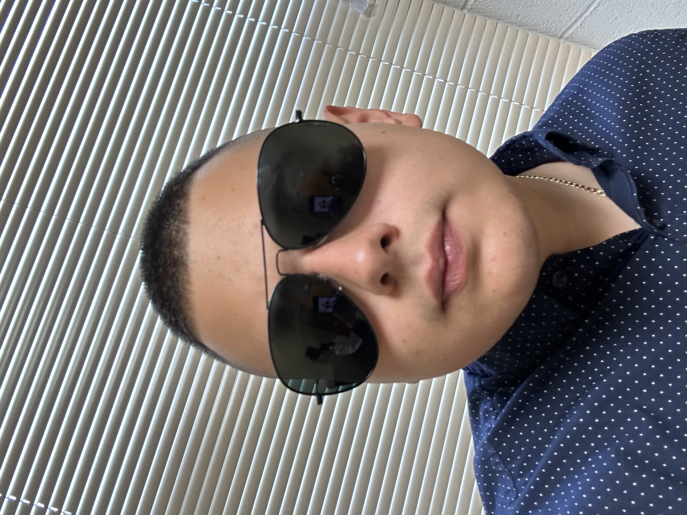

Instagram: cristomiking

I am double jointed, so I can pull my fingers all the way back without injury due to my flexibility.
I am half Mexican and half Nicaraguan, and I haven't met many Nicaraguans in the U.S. other than family.
I am an IT major who has taken various Computer Science and Cybersecurity classes.
I've worked at the Office Of Technology for 3 years, where I learned APC UPS configurations, documentation, cable making,
and troubleshooting with various systems like wifi, ethernet, printers, phones, servers, and more.